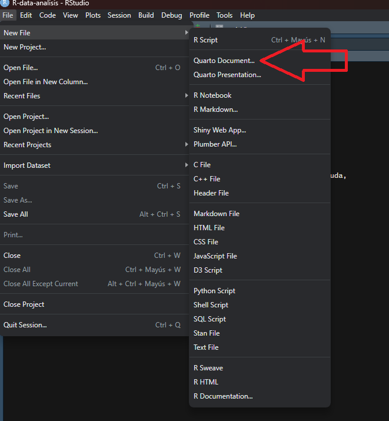
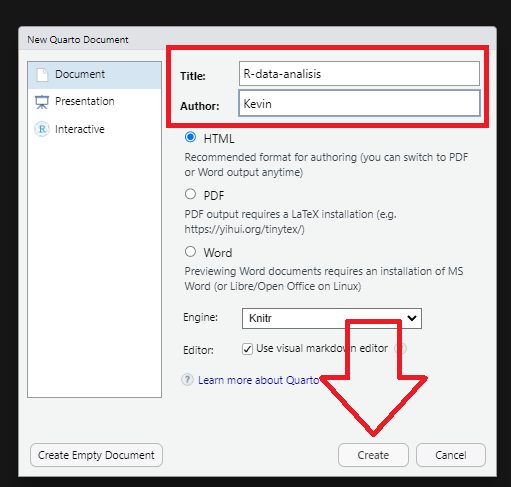
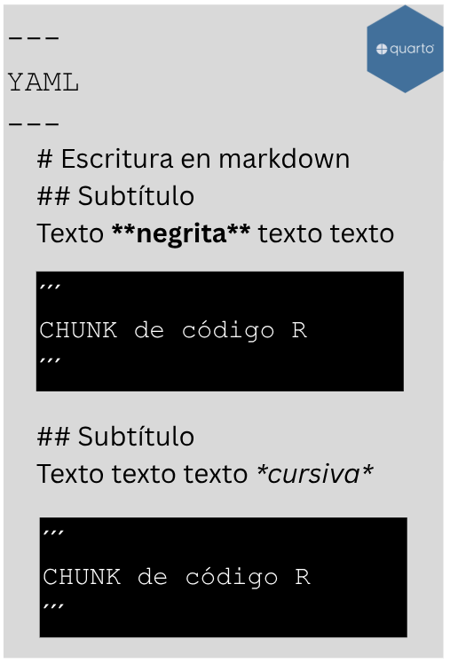
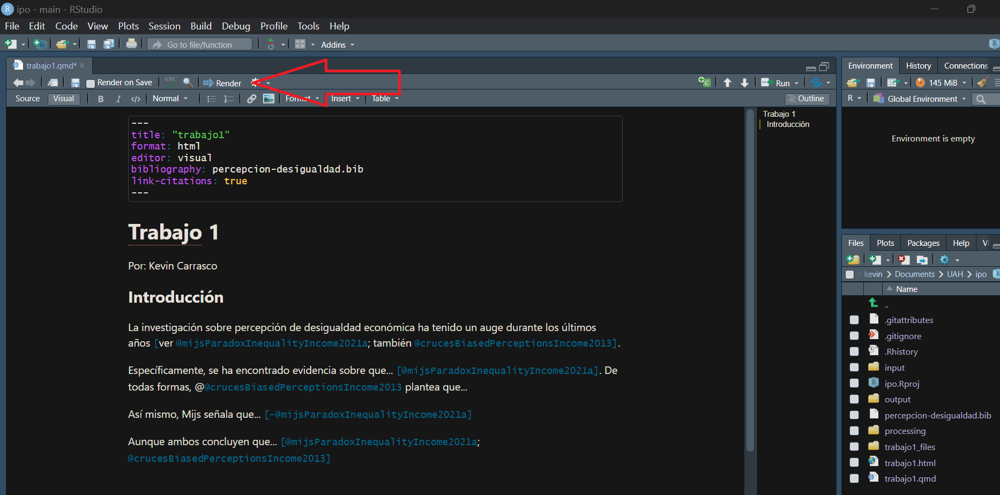
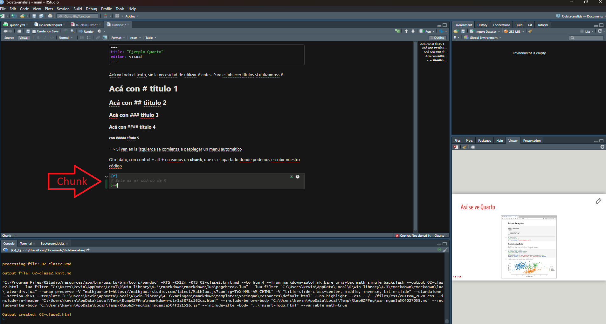
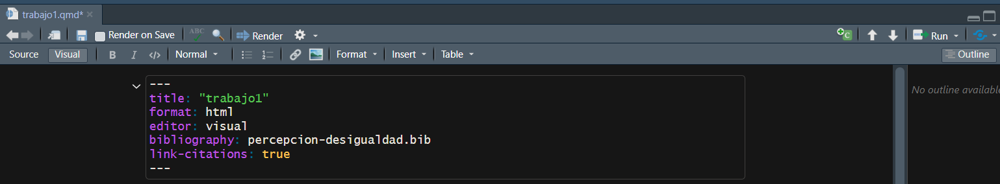
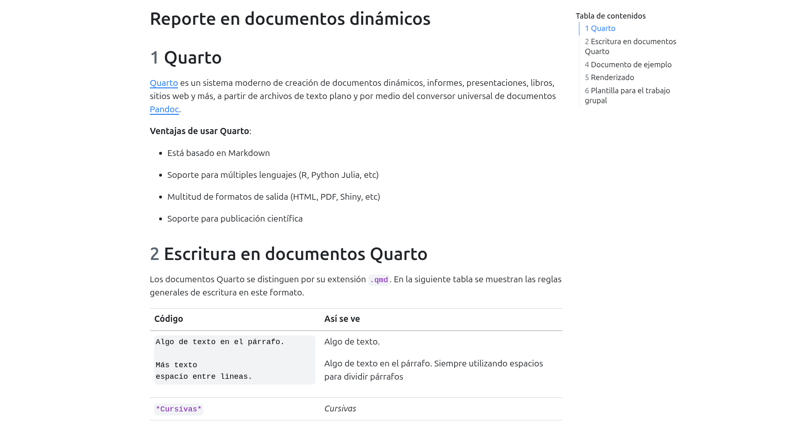
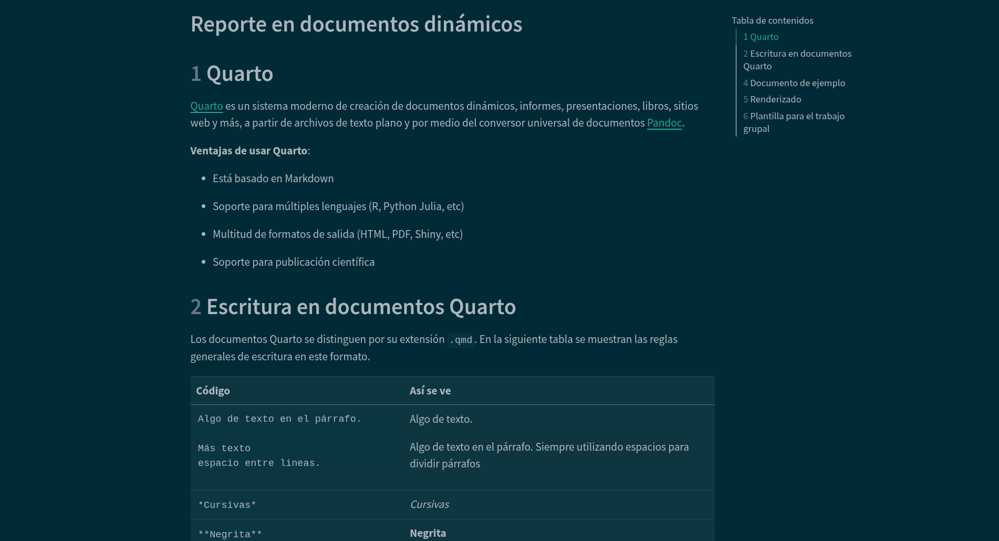

pacman::p_load(dplyr, sjmisc, sjPlot, knitr, kableExtra,
summarytools, ggeffects, ggplot2)
load(url("https://github.com/Kevin-carrasco/metod3-unab/raw/refs/heads/main/files/data/elsoc16-22.RData"))Documentos dinámicos con Quarto
Métodos estadísticos para Ciencias Sociales III
1 Presentación
1.1 Objetivo de la práctica
Esta guía introduce Quarto, el sistema que permite escribir en un mismo archivo el texto, el código y los resultados de un análisis.
El objetivo es práctico: que puedan elaborar el informe del curso en Quarto, de modo que las tablas y gráficos que aparecen en el documento sean exactamente los que produce su código. Su uso en el informe es opcional, pero recomendable, porque elimina de raíz el problema de copiar resultados a mano y olvidar actualizarlos cuando el análisis cambia.
Al terminar, usted debería ser capaz de:
- Crear un documento Quarto y renderizarlo a HTML o PDF
- Escribir texto con formato utilizando Markdown
- Insertar código en bloques y controlar qué se muestra de cada uno
- Incluir resultados numéricos directamente en el texto
- Elaborar tablas y figuras con títulos y referencias cruzadas
- Configurar el documento mediante el YAML
Trabajaremos con la misma base de datos de los prácticos anteriores, de modo que el ejercicio sea directamente trasladable al informe.
2 Documentos dinámicos
Los documentos dinámicos integran en un solo archivo el texto, el código y los resultados de un análisis, lo que permite que cualquier cambio en los datos se actualice automáticamente en el documento final. Este formato permite disminuir errores manuales, reduce el tiempo de edición y asegura la reproducibilidad, ya que el documento no solo muestra resultados, sino que los genera directamente. Por eso se ha vuelto fundamental en contextos como la ciencia abierta, la docencia, los reportes periódicos y el trabajo colaborativo.
La base de este tipo de documentos es Markdown, un lenguaje de texto plano con marcas mínimas de edición que, al estar en código simple, puede ampliarse para incluir código ejecutable, como R. Esto permite crear documentos que son legibles para humanos, procesables por máquinas y exportables a múltiples formatos. El principio es simple: escribir en texto plano y dejar que el documento se encargue de automatizar el resto.
NotaUn problema que todos conocen
Usted estima un modelo, copia la tabla al documento de texto y escribe la interpretación. Dos días después detecta un error en la recodificación de una variable, corrige el código y vuelve a estimar. Ahora debe recordar cada tabla, cada gráfico y cada número mencionado en el texto para actualizarlos uno a uno.
Con un documento dinámico, basta con volver a renderizar.
3 Quarto
Quarto es un sistema para crear informes, presentaciones, libros y sitios web a partir de archivos de texto plano que combinan Markdown y código ejecutable. Su funcionamiento se basa en el conversor universal de documentos Pandoc, que permite transformar un mismo archivo fuente en múltiples formatos de salida.
Ventajas de usar Quarto:
Está basado en Markdown: conserva la lógica de texto plano con marcas mínimas
Soporte para múltiples lenguajes (R, Python, Julia, entre otros)
Multitud de formatos de salida (HTML, PDF, Word, presentaciones)
Permite integrar en un mismo archivo el procesamiento, el análisis y la redacción
3.1 Crear un documento Quarto
Quarto ya se encuentra integrado en RStudio. Abrimos nuestro proyecto y seleccionamos: File → New File → Quarto Document.


Los documentos Quarto se distinguen por su extensión .qmd.
TipTrabajen siempre dentro de un proyecto
Antes de crear el documento, asegúrese de estar dentro de un proyecto de RStudio (File → New Project). Esto fija la carpeta de trabajo y permite usar rutas relativas como input/data/elsoc.RData, que funcionan en cualquier computador. Las rutas absolutas del tipo C:/Users/.../Escritorio/... solo funcionan en el suyo, y son la causa más frecuente de que el documento de una pareja no compile en el computador de la otra.
3.2 Cómo funciona

El documento .qmd contiene texto y código. Para transformarse en un documento final debe ser renderizado. Ese proceso convierte primero todo a Markdown mediante la librería knitr, ejecutando el código en el camino, y luego Pandoc transforma ese archivo intermedio al formato de salida. Todo ocurre automáticamente: ustedes solo ven el .qmd y el documento final.
3.3 Estructura del documento
Un documento Quarto tiene tres partes:
- YAML: metadatos y configuración del documento
- Cuerpo: el texto escrito en Markdown
- Chunks de código: bloques ejecutables cuyos resultados se incorporan al documento

Comenzaremos por el cuerpo, luego veremos los chunks y finalmente el YAML.
4 Escritura en Markdown
| Código | Así se ve |
|---|---|
*Cursivas* |
Cursivas |
**Negrita** |
Negrita |
# Título 1 |
Título de primer nivel |
## Título 2 |
Título de segundo nivel |
### Título 3 |
Título de tercer nivel |
[Texto enlace](https://quarto.org/) |
Texto enlace |
 |
Inserta una imagen |
> Cita |
Bloque de cita |
1. Primero |
Lista ordenada |
- Elemento |
Lista no ordenada |
Se puede llegar hasta un título de sexto nivel con ######. La jerarquía de títulos organiza el documento y, como veremos, permite generar automáticamente un índice.
AdvertenciaLos párrafos se separan con una línea en blanco
Un salto de línea simple no crea un párrafo nuevo. Si escribe dos líneas seguidas sin dejar una línea en blanco entre ellas, Markdown las unirá en un solo párrafo.
4.1 Notas al pie
Para insertar una nota al pie1 se escribe [^1] en el lugar correspondiente, y en otra línea del documento:
[^1]: Este es el texto de la nota.
5 Actividad 1
Antes de continuar, deténgase y realice lo siguiente:
- Cree un proyecto de RStudio llamado
taller-quartoy, dentro de él, un documento Quarto - Escriba un título de primer nivel y dos secciones de segundo nivel
- Redacte un párrafo de aproximadamente cien palabras en cada sección, utilizando negrita, cursiva y al menos una lista
- Inserte un enlace y una nota al pie
- Renderice el documento y verifique que el formato se aplica correctamente
6 Renderizado
Renderizar es el proceso que genera el documento final a partir del .qmd. Se ejecuta con el botón Render de RStudio o con el atajo Ctrl + Shift + K.

ImportanteEl documento se ejecuta desde cero
Al renderizar, Quarto abre una sesión de R nueva y ejecuta todo el documento desde la primera línea. Esto significa que no sirve lo que usted tenga cargado en memoria: si un objeto se creó en la consola y no aparece en ningún chunk, el documento no compilará.
Esa exigencia es una ventaja: garantiza que el documento sea reproducible por cualquier persona que tenga el archivo y los datos.
7 Código: chunks y sus opciones
Para incluir código se utiliza un bloque llamado chunk, que se crea con Ctrl + Alt + I o desde el menú Code → Insert Chunk.

Carguemos las librerías y la base de datos del curso:
Al renderizar, ese chunk muestra el código, los mensajes de carga de los paquetes y cualquier advertencia. Para un informe, esa salida sobra.
7.1 Opciones de chunk
Las opciones se escriben al comienzo del chunk, precedidas de #|:
| Opción | Descripción |
|---|---|
eval |
Evalúa el bloque de código. Si es false, muestra el código sin ejecutarlo |
echo |
Incluye el código en la salida. Si es false, muestra solo el resultado |
output |
Incluye los resultados de la ejecución (true, false o asis) |
warning |
Incluye las advertencias en la salida |
message |
Incluye los mensajes en la salida |
error |
Incluye los errores en la salida, sin detener la compilación |
include |
Control general: include: false ejecuta el código pero no muestra nada |
label |
Asigna un nombre al chunk, necesario para las referencias cruzadas |
El procesamiento de las variables es un buen ejemplo de código que conviene ejecutar sin mostrar. Usamos include: false:
El código se ejecutó y el objeto proc_data ya existe, pero nada apareció en el documento.
TipUna configuración global
Si quiere aplicar las mismas opciones a todo el documento, agréguelas en el YAML:
execute:
warning: false
message: false
echo: trueY modifique solo los chunks que requieran otro comportamiento.
7.2 Código en línea
Esta es una de las funciones más útiles para un informe. Se puede insertar un resultado directamente en medio del texto, escribiendo el código entre comillas invertidas y precedido de r.
Por ejemplo: la base procesada contiene 2301 casos, y el promedio de estatus social subjetivo es de 4.33 puntos en una escala de 0 a 10.
Esos dos números no fueron escritos a mano: se calcularon al renderizar. Si ustedes cambian el criterio de limpieza del ingreso, o eligen otra ola, el texto se actualiza solo.
ImportantePor qué importa para el informe
Escribir en el texto “el coeficiente de educación es 0,161” obliga a corregir esa cifra cada vez que el modelo cambie. Escribirla como código en línea elimina el riesgo de que el texto contradiga la tabla, que es uno de los errores más frecuentes al redactar resultados.
8 Tablas y figuras
8.1 Referencias cruzadas
Para poder referenciar una tabla o un gráfico desde el texto, el chunk necesita dos opciones: una etiqueta y un título.
NotaLa regla de los prefijos
La etiqueta debe comenzar con tbl- si el chunk produce una tabla, y con fig- si produce un gráfico. Sin ese prefijo, la referencia no funciona.
Además, dos chunks no pueden tener la misma etiqueta.
8.2 Una tabla de descriptivos
El chunk lleva dos opciones adicionales, label y tbl-cap:
descr(proc_data,
stats = c("mean", "sd", "min", "med", "max", "n.valid"),
transpose = TRUE,
order = "preserve") %>%
kable(digits = 2) %>%
kable_styling(bootstrap_options = c("striped", "hover"),
full_width = FALSE)| Mean | Std.Dev | Min | Median | Max | N.Valid | |
|---|---|---|---|---|---|---|
| estatus | 4.33 | 1.53 | 0.0 | 5.0 | 10 | 2301 |
| educacion | 5.16 | 2.18 | 1.0 | 5.0 | 10 | 2301 |
| ing100 | 5.88 | 5.58 | 0.5 | 4.5 | 50 | 2301 |
| edad | 46.07 | 15.14 | 18.0 | 46.0 | 88 | 2301 |
Para referenciarla en el texto se escribe @tbl-descriptivos, lo que se renderiza así: los descriptivos de las variables se presentan en la Tabla 1.
8.3 Una tabla de regresión
Las tablas de tab_model funcionan igual:
modelo1 <- lm(estatus ~ educacion, data = proc_data)
modelo2 <- lm(estatus ~ educacion + ing100 + edad, data = proc_data)
tab_model(list(modelo1, modelo2),
show.se = TRUE,
show.ci = FALSE,
digits = 3,
p.style = "stars",
dv.labels = c("Modelo 1", "Modelo 2"),
pred.labels = c("(Intercepto)", "Nivel educacional",
"Ingreso (cientos de miles)", "Edad"),
string.pred = "Predictores",
string.est = "β")| Modelo 1 | Modelo 2 | |||
|---|---|---|---|---|
| Predictores | β | std. Error | β | std. Error |
| (Intercepto) | 3.273 *** | 0.078 | 2.922 *** | 0.146 |
| Nivel educacional | 0.204 *** | 0.014 | 0.161 *** | 0.016 |
| Ingreso (cientos de miles) | 0.048 *** | 0.006 | ||
| Edad | 0.006 ** | 0.002 | ||
| Observations | 2301 | 2301 | ||
| R2 / R2 adjusted | 0.085 / 0.084 | 0.113 / 0.111 | ||
| * p<0.05 ** p<0.01 *** p<0.001 | ||||
Los resultados se presentan en la Tabla 2. El coeficiente de educación en el modelo completo es de 0.161, y el modelo explica un 11.3% de la varianza.
Observe que esas dos cifras también están escritas como código en línea.
8.4 Una figura

Y se referencia igual: los valores predichos se presentan en la Figura 1.
Note que en este chunk usamos echo: false, de modo que el gráfico aparece sin el código que lo genera. Es lo habitual en un informe.
8.5 Opciones útiles para figuras
| Opción | Para qué sirve |
|---|---|
fig-cap |
Título de la figura |
fig-cap-location |
Ubicación del título (top, bottom) |
fig-align |
Alineación (left, center, right) |
fig-width, fig-height |
Dimensiones en pulgadas |
out-width |
Ancho de la imagen en el documento (por ejemplo, "80%") |
9 El YAML
Va al inicio del documento, delimitado por tres guiones, y cumple la función de identificar y configurar el documento antes de su ejecución.
---
title: "Estatus social subjetivo en Chile"
author: "Nombre y Nombre"
date: "2026-10-09"
lang: es
format:
html:
toc: true
number-sections: true
---
AdvertenciaEl YAML es sensible a la sintaxis
Un espacio de más, un dos puntos sin espacio después, o una indentación inconsistente impiden que el documento compile. Es la causa más común de errores al comenzar.

9.1 Opciones frecuentes
| Opción | Qué hace |
|---|---|
toc: true |
Genera un índice automático a partir de los títulos |
toc-depth: 3 |
Define hasta qué nivel de título incluir en el índice |
number-sections: true |
Numera automáticamente las secciones |
code-fold: true |
Oculta los bloques de código, con un botón para desplegarlos |
title-block-banner: true |
Agrega un banner al bloque de título |
theme: united |
Aplica un tema visual |
embed-resources: true |
Genera un HTML autocontenido, en un solo archivo |
TipPara entregar el informe en HTML
La opción embed-resources: true incrusta imágenes y estilos dentro del propio archivo .html. Sin ella, el documento depende de una carpeta auxiliar que suele olvidarse al momento de subir la entrega.
9.2 Indentación
La indentación organiza las opciones jerárquicamente. Las opciones que dependen de otra se escriben con sangría debajo de ella:
---
title: "Mi informe"
format:
html:
theme:
- united
- estilos.scss
toc: true
---Aquí html depende de format, y theme y toc dependen de html. Una indentación incorrecta hace que Quarto no reconozca la opción, o que el documento no compile.
9.3 Formatos de salida
format: html # página web
format: pdf # requiere una instalación de LaTeX
format: docx # documento Word
AdvertenciaSobre el formato PDF
Renderizar a PDF requiere LaTeX instalado. Si no lo tiene, ejecute una sola vez en la consola:
quarto::quarto_install_tinytex()
Si el plazo de entrega está próximo y surge algún problema con la instalación, la alternativa segura es renderizar a HTML y exportar a PDF desde el navegador.
9.4 Temas
Quarto incluye varios temas que modifican la apariencia del documento. Se aplican con el argumento theme en el YAML.


El listado completo está disponible en la documentación de temas de Quarto. También es posible personalizar la apariencia con un archivo .scss propio.
10 Errores frecuentes
| Mensaje o síntoma | Causa habitual |
|---|---|
object 'x' not found |
El objeto se creó en la consola, no en un chunk |
could not find function |
Falta cargar el paquete dentro del documento |
cannot open file |
Ruta incorrecta, o se usó una ruta absoluta |
duplicate label |
Dos chunks tienen la misma etiqueta |
| El YAML no se reconoce | Falta un espacio después de los dos puntos, o la indentación es inconsistente |
La referencia aparece como ?@fig-x |
La etiqueta no lleva el prefijo correcto, o está mal escrita |
| El documento compila pero falta una figura | El chunk tiene include: false o eval: false |
TipRenderice seguido
No espere a terminar el informe para compilar por primera vez. Renderice después de cada sección: así, cuando aparezca un error, sabrá exactamente en qué parte se produjo.
11 Actividad 2
En el sitio del curso encontrarán el archivo plantilla-informe.qmd, que contiene la estructura completa del informe: el YAML configurado, las secciones de la rúbrica como títulos y los chunks preparados para cargar, procesar y analizar los datos. También se puede descargar de acá
Descárguenlo, ábranlo en su proyecto de RStudio y realicen lo siguiente:
Renderícenlo tal como viene, para comprobar que funciona en su computador
Reemplacen las variables de ejemplo por las cinco variables que eligieron para su informe: una dependiente continua y cuatro independientes, de las cuales al menos una debe ser categórica
Ajusten el procesamiento: recodificación de casos perdidos, nombres de variables y cualquier transformación que requieran
Verifiquen que la tabla de descriptivos, la matriz de correlaciones, la tabla de regresión y el gráfico de valores predichos se generan correctamente con sus variables
Reemplacen al menos tres cifras del texto por código en línea, de modo que se actualicen solas
Completen el YAML con el título de su investigación, los nombres de la pareja y la fecha
Agreguen un tema a elección y la opción
embed-resources: trueRendericen y revisen que todas las referencias cruzadas funcionan
Al terminar tendrán el esqueleto del informe funcionando con sus propios datos, y solo les restará escribir el contenido.
12 Recursos
Notas
Este es el texto de la nota al pie.↩︎